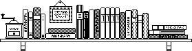

7.7.0.3
Readings

The course does not require a text book. Here are some suggestions for additional readings on a couple of key topics:
The first two cover interpretive models of programming language concepts:
Krishnamurthi, Programming Languages: Applications and Implementations (PLAI)
Friedman & Wand, Essentials of Programming Languages (EoPL)
If you like types or the connection between types and proofs,
Pierce, Types and Programming Languages (TaPL)
Girard, Types and Proofs
For the connections between interpreters, semantics, and abstract machines, consider
Felleisen, Findler, Flatt, Semantics Engineering (parts I, II)